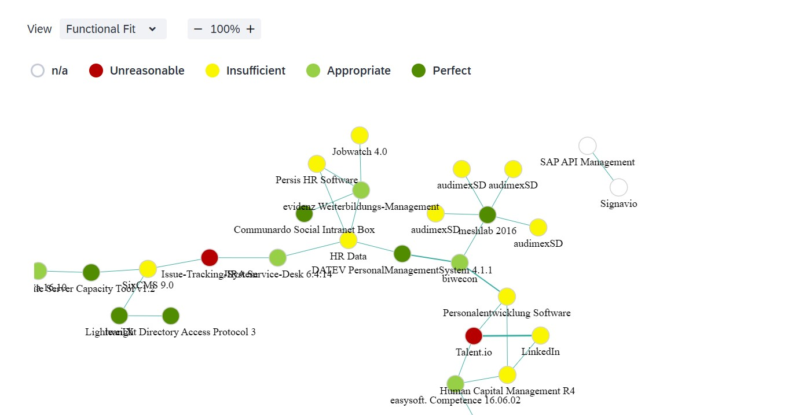

Project Details
Application Integration Graph (LeanIX)
With the rapid growth of IT systems, understanding the connections and dependencies between various applications has become crucial for efficient management. This project involves the creation of a comprehensive integration graph in LeanIX, providing valuable insights into application relationships within an organization.
The Application Integration Graph provides a visual representation of interconnected systems within LeanIX, aiding in architecture decision-making, dependency management, and operational efficiency. The project focuses on building an intuitive graph that represents the complex data flows and dependencies among applications.
Project Highlights:
- Visualized interdependencies among applications for better architecture management
- Simplified complex data relationships for improved decision-making
- Enabled proactive identification of potential risks and system bottlenecks
Solution Components:
The solution utilizes LeanIX’s API capabilities to extract and visualize application data. Each connection between applications is represented to provide a holistic view of the IT landscape.
- Integrated data from multiple sources to create a unified graph in LeanIX
- Mapped out critical application dependencies to enhance system stability
- Built interactive visualization tools to facilitate data exploration and analysis
Technology & Tools:
The project leverages LeanIX APIs along with custom visualization tools to build the graph. Data is processed through ETL pipelines, ensuring accurate and up-to-date information.
Impact and Future Enhancements:
This graph-based approach to application integration empowers IT departments to make data-driven decisions. Future enhancements could include predictive analytics to forecast system impacts from potential changes in application dependencies.